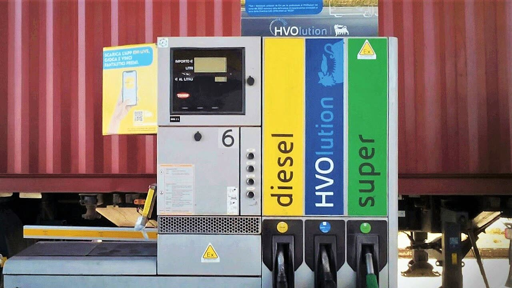

Gasolio, tornano le accise mobili: taglio di 4,9 centesimi fino al 23 novembre
Il coro regge
Non è una tassa più bassa: è l'Iva incassata in più sui rincari che torna a rate per due settimane. Meglio un taglio stabile, deciso una volta sola.
Redazione Contrappunto · aggiornato il 10.11.2026


Sul gasolio, oltre al prezzo del prodotto, ogni litro paga l'accisa, un'imposta di importo fisso (672,90 euro per mille litri, cioè 67,29 centesimi al litro), e sopra tutto l'Iva al 22% (Il Messaggero). Con un decreto firmato dai ministri dell'Economia, Giancarlo Giorgetti, e dell'Ambiente e della Sicurezza energetica, Gilberto Pichetto Fratin, e pubblicato in Gazzetta Ufficiale il 9 novembre, da oggi 10 novembre al 23 novembre l'accisa sul gasolio scende a 632,90 euro per mille litri: 4 centesimi al litro in meno, 4,88 con l'Iva, che i giornali arrotondano a 4,9 (ANSA, Il Messaggero, Edotto). Il taglio precedente era finito sabato 7 novembre: l'8 e il 9 novembre l'accisa era quella piena (Edotto). Come abbiamo scritto l'8 novembre, in Gazzetta non c'era la proroga; due giorni dopo il governo ha cambiato strada.
Vedi di più: 4 parole spiegate, cosa si racconta
Cosa si raccontaANSA, Il Sole 24 Ore, Il Messaggero e Sky TG24 raccontano lo stesso fatto: torna lo sconto sul gasolio, 4,9 centesimi al litro Iva compresa, fino al 23 novembre, pagato con le maggiori entrate Iva di ottobre. Il Messaggero precisa che non è un taglio permanente delle tasse; MotoriSuMotori lo chiama un «cerotto» finanziato da chi paga i rincari. Nessuna delle testate lette contesta i numeri. [ANSA] [Il Sole 24 Ore] [Il Messaggero] [Sky TG24] [MotoriSuMotori]
- Accisa
- Imposta di importo fisso su ogni litro di carburante, che non dipende dal prezzo; l'Iva si paga sopra, sul prezzo che comprende già l'accisa (Il Messaggero, Pagella Politica).
- Accise mobili
- Meccanismo previsto da una legge del 2007 (articolo 1, commi 290 e 291, legge 244): quando il petrolio rincara e lo Stato incassa più Iva, una parte di quel maggior gettito può essere usata per ridurre temporaneamente le accise (Il Messaggero, Edotto).
- Extragettito Iva
- L'Iva incassata in più dallo Stato perché i prezzi dei carburanti sono saliti: l'Iva è una percentuale del prezzo (Il Messaggero).
- Decreto interministeriale Mef-Mase
- Atto firmato insieme dal ministero dell'Economia (Mef) e da quello dell'Ambiente e della Sicurezza energetica (Mase), che fissa per un periodo la nuova aliquota (ANSA, Edotto).
- Dal 10 al 23 novembre l'accisa sul gasolio è di 632,90 euro per mille litri invece di 672,90: 4 centesimi al litro in meno, 4,88 con l'Iva; la benzina è esclusa (ANSA, Il Messaggero).
- Lo sconto costa 43,2 milioni, presi da una quota dell'Iva incassata in più a ottobre, poco più di 3 milioni al giorno (Il Sole 24 Ore, Edotto).
ANSA, Il Sole 24 Ore, Il Messaggero e Sky TG24 danno gli stessi numeri e li spiegano bene: 4,88 centesimi in meno al litro, solo sul gasolio, fino al 23 novembre. Il Messaggero precisa che non è un taglio permanente; il Sole nota che il decreto usa solo una quota dell'Iva di ottobre. Da dire c'è chi paga: l'Iva in più viene dai rincari che gli automobilisti hanno già sopportato, e torna a rate. La pausa di due giorni lo mostra: finita la rata, torna l'accisa piena. Meglio un taglio stabile, deciso una volta, che un decreto a ogni scadenza. [1] [2] [3] [4]
La verifica punto per punto5 passaggi, 7 fonti
Qui sotto ogni cosa scritta sopra, una per una, con le fonti. Confermato: lo dice un documento originale o più fonti lette. Plausibile: lo riportano fonti serie, ma non abbiamo letto l'originale. Discordante: le fonti danno numeri diversi, e diciamo quali. Ipotesi e Opinione sono il nostro ragionamento, separato dai fatti.
Cosa dice il decreto
Il decreto del ministero dell'Economia del 9 novembre 2026, adottato con il ministero dell'Ambiente (ministri Giancarlo Giorgetti e Gilberto Pichetto Fratin) e pubblicato in Gazzetta Ufficiale n. 261 del 9 novembre, fissa per il gasolio usato come carburante l'accisa a 632,90 euro per mille litri dal 10 al 23 novembre 2026 (Edotto, Il Messaggero). L'aliquota ordinaria è 672,90: 40 euro per mille litri, cioè 4 centesimi al litro, che con l'Iva al 22% diventano circa 4,9 (4,88 per ANSA) (Il Messaggero, ANSA). La benzina è esclusa (Il Messaggero). L'8 e il 9 novembre non rientrano in nessun periodo agevolato, perché il decreto del 27 ottobre valeva fino al 7 (Edotto). Dopo il 23, senza un nuovo decreto, l'accisa tornerà ordinaria (Il Messaggero).
Chi paga: l'Iva dei rincari
Il taglio usa l'articolo 1, commi 290 e 291, della legge 244 del 2007 (Il Messaggero, Edotto). L'articolo 2 del decreto destina 43,2 milioni di euro, presi dal maggior gettito Iva incassato dal 1° al 31 ottobre, a compensare le minori entrate (Edotto). Per Il Sole 24 Ore è una «quota parte» del gettito in più, per un costo giornaliero di poco più di 3 milioni (Il Sole 24 Ore). Per Il Messaggero non è un nuovo stanziamento e «Non si tratta quindi di un taglio generalizzato e permanente delle tasse»; per Edotto il decreto «non dispone, quindi, una modifica strutturale dell’aliquota di accisa sul gasolio». Per MotoriSuMotori è «il rincaro che abbiamo già sofferto finanzia il cerotto sul rincaro».
Il precedente: uno sconto sempre più piccolo
Il primo taglio è del 18 marzo: 20 centesimi al litro per benzina e gasolio per venti giorni, con un costo complessivo di 527 milioni nel 2026 (somma che comprende anche altre misure per autotrasporto e pesca). Poi lo sconto è stato ridotto più volte; il 27 luglio è stato ripristinato a 17 centesimi sul gasolio, e il 6 ottobre gli sconti sono stati eliminati. Il 28 ottobre è tornato a 4 centesimi, per 38,7 milioni di extragettito Iva di settembre (Pagella Politica, 28 ottobre).
I prezzi alla pompa, come riportati
Per l'Osservatorio prezzi del ministero delle Imprese, citato da MotoriSuMotori, il 9 novembre il gasolio self costava in media 2,232 euro al litro (2,223 il giorno prima), 2,287 in autostrada; la benzina 2 euro. Il ministero prevede da martedì un diesel intorno a 2,2 euro (Il Sole 24 Ore, Sky TG24). Dati non letti alla fonte.
Il nostro punto
Chi va a gasolio paga meno per due settimane, e va bene. Ma non è una tassa più bassa: è l'Iva incassata in più sui rincari che torna a rate, con due giorni di buco in mezzo e una nuova Gazzetta da aspettare a ogni scadenza. Il governo può rispondere che così non crea buchi di bilancio, perché spende solo ciò che il rincaro ha già portato. Giusto, ma l'accisa è fissa e resta: se il petrolio scende, l'Iva in più sparisce e con lei lo sconto. Meglio un taglio stabile dell'accisa sul gasolio, coperto con meno spesa corrente: a 43,2 milioni ogni 14 giorni sarebbero circa 1,1 miliardi l'anno (nostro calcolo, a consumi invariati).
Fonti7, tutte con il link
- In vigore nuovo taglio accise sul diesel, -4,9 centesimi fino al 23 novembre (10 novembre 2026) (ANSA) · consultata il 10.11.2026
- Carburanti, tornano le accise mobili: taglio da 4,9 centesimi sul gasolio fino al 23 novembre (9 novembre 2026) (Il Sole 24 Ore) · consultata il 10.11.2026
- Gasolio, tornano le accise mobili: taglio fino al 23 novembre, ecco quanto si risparmia sul pieno (10 novembre 2026) (Il Messaggero) · consultata il 10.11.2026
- Diesel, nuovo taglio accise: sconto sul gasolio da oggi al 23 novembre (10 novembre 2026) (Sky TG24) · consultata il 10.11.2026
- Accisa gasolio, taglio fino al 23 novembre 2026 (10 novembre 2026) (Edotto) · consultata il 10.11.2026
- Gasolio, il Governo ci ripensa: lo sconto è tornato, sempre finanziato da noi (10 novembre 2026) (MotoriSuMotori) · consultata il 10.11.2026
- Il governo ha reintrodotto il taglio sulle accise sul gasolio (28 ottobre 2026) (Pagella Politica) · consultata il 10.11.2026
Testo preparato con strumenti di intelligenza artificiale e pubblicato senza revisione umana. Come lavoriamo